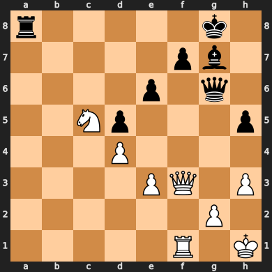
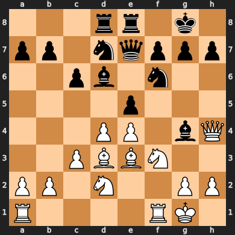
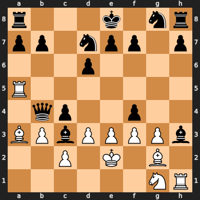
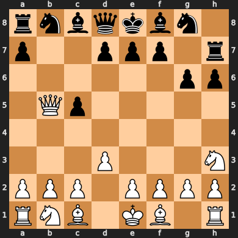
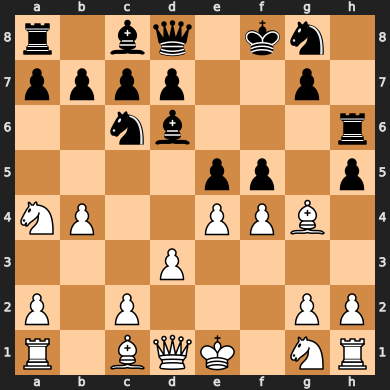
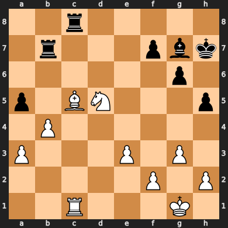

2021-01-18T15:12:27-08:00
Chess has a game tree size of about \(10^{123}\), so it will never be possible to solve chess by brute force. It might, however, be possible to solve chess practically by a combination of clever algorithms and formal analysis. Here are some ideas along those lines.
Since the consensus seems to be that chess is a draw with perfect play, let’s assume that this is the case and think about how we might go about proving the game is a draw for black.
I use here the example of “depth-20-stockfish” as a deterministic, reasonably fast, often accurate assessment of a position. Of course, one could choose a different depth, or a different engine, such as the NNUE style engines that are in vogue these days (perhaps even an engine that has been fine tuned to make it easier to prove the specific guarantees we want to prove).
One approach to solving a game is to provide a strong solution, that is, an algorithm to give a perfect move from any legal position. There are on the order of \(10^{43}\) chess positions according to the seminal Shannon paper on computer chess. Many of these positions, however, involve such weird configurations of pieces that you would never see them in a game of chess played even remotely rationally.
Here are three pictures of boards from games on lichess, and three pictures of boards generated by random moves. Can you tell which are which?
| Board Pair 1: Which is the real game? | Board Pair 2 : Which is the real game? | Board Pair 3 : Which is the real game? |
|---|---|---|
|  |  |  |
|  |  |  |
This might be hard for a beginner, but if you’re an experienced player, you can probably spot the odd ones out pretty easily: Why would white develop their queen this way? Why are so many pieces hanging? This illustrates that an important tool in solving chess is identifying which positions are even possible to occur in a game of perfect chess.
All this makes it seem more prudent to offer a weak solution, which only gives answers for a subset of positions, enough to draw the game from the starting position.
How should we restrict the set of positions we consider? One way we could do this is to say something like “In any position, black can only choose from lines which have evaluation within 2 points of the best line, according to depth-20 stockfish evaluation”. This is (hopefully) permissive enough to not change black’s ability to draw, but restrictive enough to reduce the number of positions that we consider in the rest of our analysis. Note that it is possible to eliminate some positions by doing a retrograde analysis and checking if there is no sequence of moves to attain the position under black’s constraint.
In order to solve chess we will have to develop some computational notions of which positions are draws and which are losses. Chess engines do this, but the key difference here is that an engine can rely on heuristics that are sometimes inaccurate, while a program to formally solve chess will need to be much more precise about which positions it evaluates as wins, draws or losses, and which positions it cannot properly evaluate without more computational power than it has. Taking this into account, consider the problem of making an incomplete chess oracle: A program that takes a chess position and returns “Black wins or Draws” in some (but not necessarily all) positions where this is the case, and returns “Unknown” otherwise.
An endgame tablebase is an example of an incomplete chess oracle: It returns the result of endgames, and is agnostic about positions outside of its tablebase. Another example would be a chess engine which only returns an answer if it finds a forced mate or draw.
We can ask what the most effective incomplete chess oracle under constraints:
Since this optimization question ranges over all algorithms, it is impossible to know exactly what the solution is. I would conjecture however, that the answer looks something like the following:
Run Stockfish on the position for 0.99 seconds, then return “Black Wins or Draws” if the score is at least -7.0 in Black’s favor. Build a list of positions for which this result is incorrect, and use the remaining time to check that the given position is not in that list before returning.
The correctness of this conjecture depends on whether the number of games that must be built into the program’s “exception table” can fit into the laptop’s memory. There are on the order of \(10^{43}\) chess positions according to the seminal Shannon paper on computer chess. Some fraction of these will be unreachable under the constraints imposed in the previous section. Of those that remain, only a fraction will have evaluations this extreme in favor of black, and of these, many will have evaluations more extremely in favor of black, and will be very unlikely to be a win for white. As it is, the fraction of games with around a -7.0 evaluation will break heavily in favor of black, which we can estimate…
The fraction of positions for which depth-20-stockfish gives black a -7.0 score for Black but where white has a win is vanishingly small. However, we can still estimate it using a heuristic argument.
Consider chess positions in terms of two variables:
These variables divide all chess positions into one of ~24, 000 buckets. I can see the dynamics of a game with respect to these buckets by
You can then compute the transition probability matrix between buckets, and create a Markov chain. This allows to estimate the fraction of positions with a -7.0 depth-20-stockfish score that result in a win for white (where black is depth-20-stockfish skill and white is depth-20-plus-\(k\)-stockfish). We can then increase \(k\) and see how this affects the win probability.
TODO code this
We have conjectured that the algorithm mentioned earlier provides an accurate oracle except for a large but manageable set of positions. How can we determine those positions?
We are looking for positions where depth 20 stockfish is different from depth 21 stockfish. Thus, we focus on the TODO
TODO